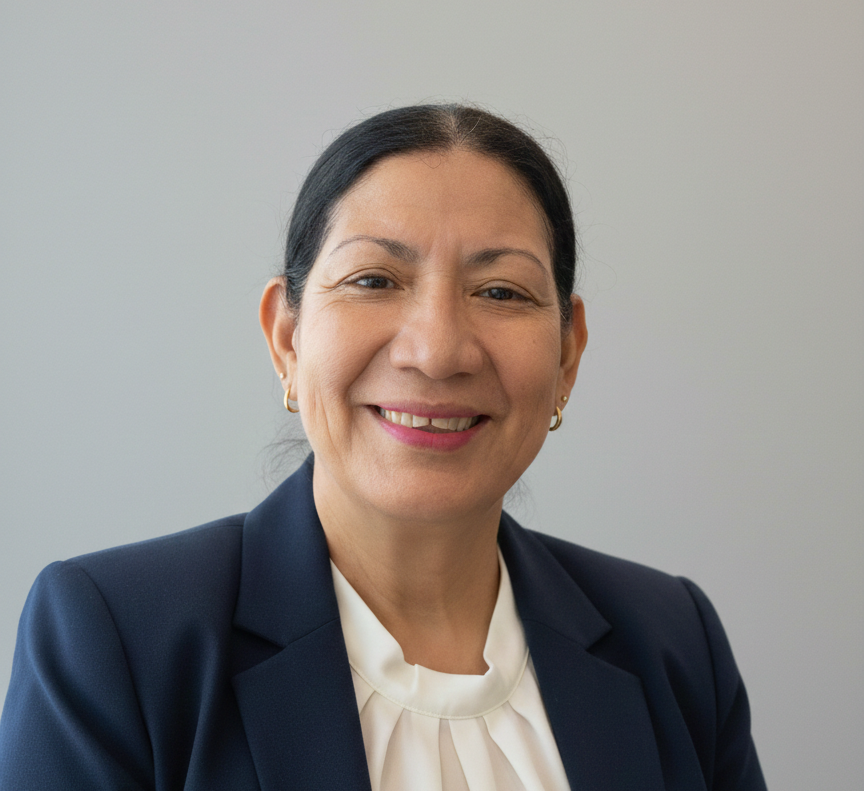

Asesoría en investigación documental
Diseño y orientación metodológica para trabajos académicos con fuentes confiables.
Especialista en Investigación Documental
Licenciada en Lengua y Literatura con 33 años de experiencia en procesos educativos, asesoría metodológica y fortalecimiento de la escritura académica.
Conocer servicios
Servicios
Diseño y orientación metodológica para trabajos académicos con fuentes confiables.
Revisión de redacción, coherencia y normas de presentación para textos universitarios.
Refuerzo personalizado para comprensión lectora, análisis literario y producción escrita.
Conóceme
Durante más de tres décadas he formado estudiantes y docentes con enfoque crítico, ético y práctico, integrando investigación, lenguaje y pedagogía.
Contacto
Agenda una asesoría y avancemos con claridad metodológica y calidad académica.